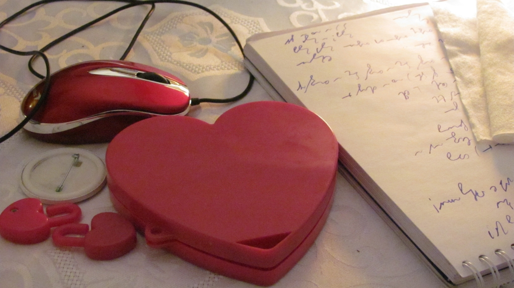
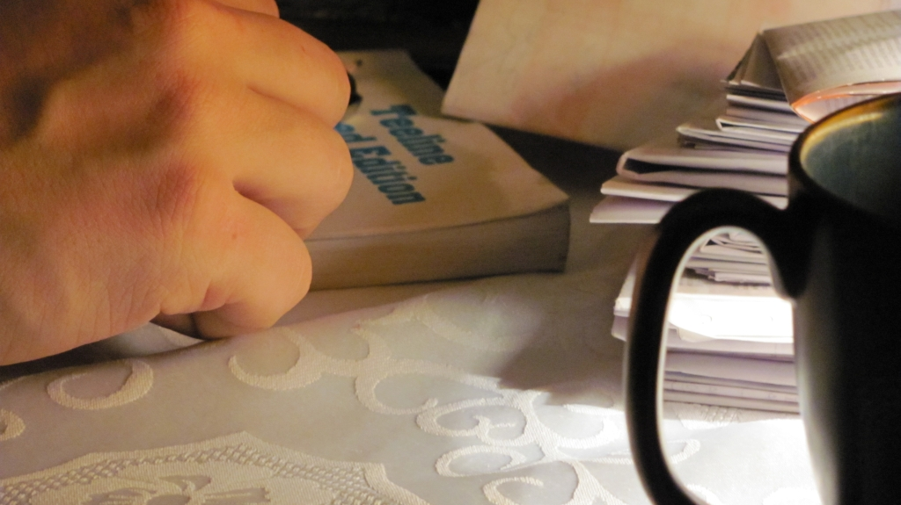

International
InternationalPłodozmian
2011-03-31 | autor: flamenco108Hobby znalazłem sobie takie, że wystarczy do emerytury, a zapewne i dalej. O ile będzie jakaś emerytura, a zatem i jakieś dalej. Aktualnie mam więcej materiału w formie surowej, niż jestem w stanie na bieżąco przerabiać, a mam na myśli samo zapoznawanie się z nim, samolubne pochłanianie informacji, a nie idealistyczne dzielenie się nią - ot chociażby przez ten blog.

Nad czym zatem teraz pracuję równolegle (żeby wymienić tylko to z dziedziny stenografii)?
- SteMi - robocza nazwa nowego, odręcznego systemu stenograficznego. Jeszcze kilka dni temu myślałem, że nic nowego w tej materii nie wymyślę i pozostanie mi tylko spisanie dokumentu systemowego. Tylko? Zakładam, że zajmie mi to kilka miesięcy uczciwej pracy.
- Brewiskrypt - ogólny system pisania skrótowego, z przeznaczeniem do użycia na dowolnym nośniku, przy pomocy dowolnego narzędzia - a zatem także przydatny przy pisaniu na klawiaturze. Ma być oparty o litery polskie. Projekt aktualnie w powijakach, choć trzeba przyznać, że badania statystyczne, jakie wykonał No-qanek stanowią dobrą bazę na początek - żeby się w ogóle cokolwiek wykluło.
- Wyżej wymieniony dokument systemowy - samo opracowanie formy i szkieletu formalnego dokumentu zaliczam do osobnego projektu, szczególnie, że dzięki temu podciągam się znacznie zLaTeXa.
- Dokończenie strony głównej w rozdziałach o historii stenografii: cały czas zbieram materiały do opracowania historii polskiej stenografii kursywnej (historia geometrycznej już się ukazała), ale jest znacznie krótsza).
- Napisanie na stronę główną rozdziału o teorii stenografii - jak się to przyrządza i z czym to się je.
- Książka pt. “Historia stenografii” w oparciu o “Dzieje stenografii” Stefanii Bobrowskiej i Szymona Tauba, ale także prace np. Karola Faulmanna, czy Izaaka Pitmana. Ma mieć przewagę nad poprzedniczką taką, że ma zawierać ilustracje do możliwie wszystkich opisanych systemów stenograficznych, a jak cierpliwości i pracowitości wystarczy, to może jeszcze i tabele porównawcze.
- Digitalizacja posiadanych materiałów i publikacja w Internecie, w tym poszukiwanie miejsc, gdzie można “wrzucać” książki (w formie PDF, czy sekwencji obrazków, czy w jakiejkolwiek innej), żeby znalazły się w jak największej liczbie archiwów - to skutecznie zapobiegnie ich zaginięciu po wsze czasy w czeluściach bibliotek. Wyszukiwarki w internetowym śmietniku będą działać coraz lepiej, więc w ten sposób materiały te pozostaną dostępne dla każdego zainteresowanego tak długo, jak długo będzie istniał Internet.
- Poszukiwanie i pozyskiwanie następnych materiałów na temat stenografii.
O reszcie aktualnie nie pamiętam, co nie znaczy, że jakbym nie przysiadł uczciwie, to lista nie stałaby się dłuższa (BTW: to zdanie jest drwiną z angielskich kondyszjonali).

Dobranoc.
2011-03-31 autor: flamenco108